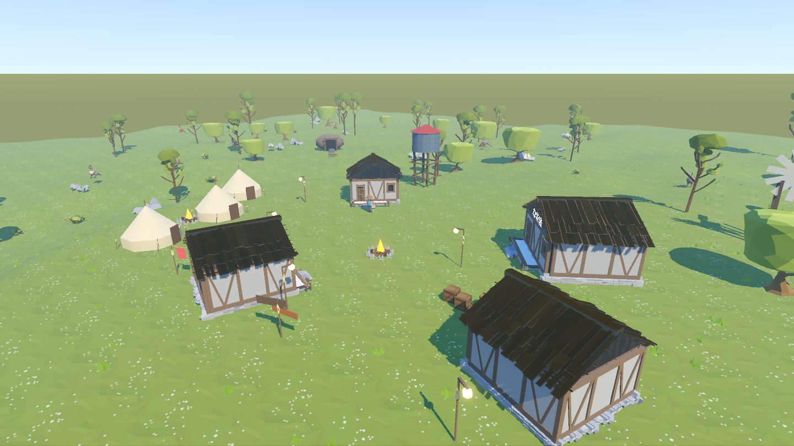
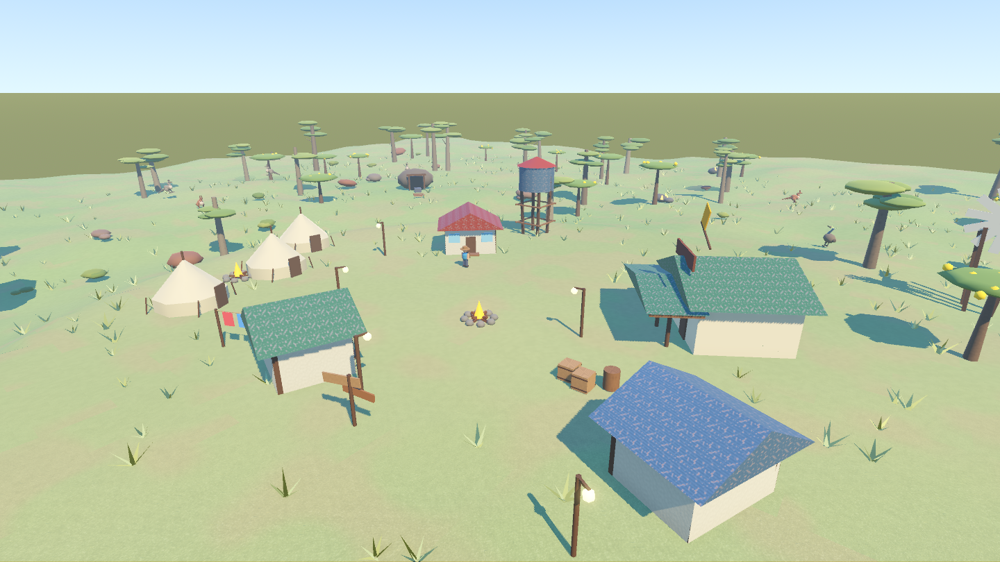
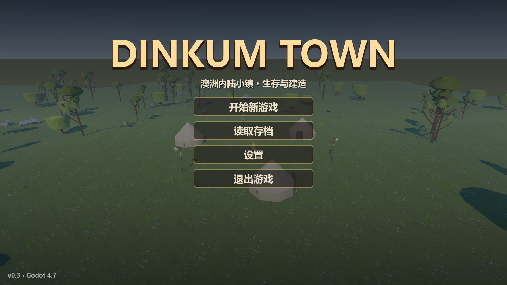

DinkumTown3D · Godot 4.7.2 · 2026-10-05
全镇素材已接入
从单栋小屋、单只木箱试换，推广到资源包可对应的建筑、自然物、道具、家具和地面。当前电脑已安装；重新启动游戏即可看到。外观采用原包的低多边形风格。
同机位前后对比


程序化外观资源包外观固定地图种子20260921、分辨率1440×810、时间与机位。动物和火焰继续运动，因此细小位置会有差异。
替换范围
| 对象 | 最终处理 |
|---|---|
| 小屋与商店 | 三栋小屋全部替换；商店采用同款房屋放大并加“杂货铺”招牌。四个门和出门落点按模型偏移适配，原室内功能与建筑ID保留。 |
| 自然物 | 两种树木、两种灌木、普通岩石、矿石主体、树桩、草丛；草丛使用原包透明裁切与风动材质，矿簇仍保留发光识别。 |
| 道具与木构件 | 全部可推动木箱、木桶与漂浮木杆；围栏、篝火石块与柴堆；码头、水塔、风车、路灯、帐篷及矿口的适用木构件通过共享工厂替换。 |
| 室内 | 床、桌、凳、炉灶、木箱、商店货架、杯瓶、木桶、麻袋，以及木地板和木结构。保留原房间大小、出生点、床交互点与照明。 |
| 地面与季节 | 接入花草地、泥土碎石和草地法线三张贴图；沿用原地形顶点色决定区域与季节，雨后湿润和岸边混合继续有效。 |
| 无对应素材的对象 | 人物、动物、农作物、水面，以及帐篷布、水塔罐体、风车叶片等保留原主体。该包没有这些游戏专用模型。 |
25个自包含模型场景 + 3张地面贴图，转换资源约4.67MiB；模型目录合计24437个三角面（不是一帧的场景面数）。没有安装addons。
验收证据
| 检查 | 结果 |
|---|---|
| 素材完整性 | emace_full_check：90项通过，模型/贴图可加载，场景无原包外部路径依赖，尺寸归一化，资源身份、家具、预览和物理层保持有效。 |
| 全部房屋进出 | emace_check：34项通过，三栋小屋与商店均可进入、退出并在新门廊外站稳；第一栋还实际步行上台阶并横移到侧门。 |
| 地图一致性 | 对整张固定种子地图的191个资源，比较类型、数量、位置，替换前后SHA-256指纹相同；工厂随机数状态相同。外观替换没有重排采集资源。 |
| 游戏回归 | combat_check 102项、water_check 37项、physics_check 23项、ui_check 1907项全绿；e2e、interior_check均fails=0。 |
| 触控布局 | 1440×810、1280×720、1920×1080、2560×1440、720×1280、810×1440、1080×1920、1440×2560，全部bad=0。 |
| 缺包与安装 | 实际无素材目录的检出：40项完整素材回退验收 + 28项房屋/存档验收通过。从原始ZIP实测完整安装脚本，退出码0，临时目录自动清理。 |
| 视觉 | 11组游戏内前后截图以及主菜单截图已检查。桌床长轴已适配；漂浮木杆去掉原木销帽并封口，避免错误显示成碎板堆或带帽木销。 |
部分headless测试有项目既有的ObjectDB退出泄漏提示；本次验收没有脚本错误或失败断言。没有测量手机帧率。
主菜单也沿用新素材

本地素材与源码同步
原包许可允许在游戏中使用、修改与随游戏发布，禁止独立素材再分发。原始和转换后的美术保存在被Git忽略的 local_assets/emace/；仓库同步接入代码、安装工具、断言与游戏截图。
另一台电脑先从原作者页面下载指定ZIP，再在游戏项目根目录运行：
powershell -ExecutionPolicy Bypass -File tools/install_emace.ps1 -ZipPath "C:\Downloads\SlavicWorldFree_Godot_2026-09-06.zip" # Godot不在默认位置时增加： # -GodotPath "C:\Tools\Godot\Godot.exe"
缺少包时自动使用程序化外观。启动参数 -- --no-emace 可临时切回原外观。行为验收场景为 res://tools/emace_check.tscn 与 res://tools/emace_full_check.tscn；截图场景为 res://tools/emace_shot.tscn，使用窗口模式。
这次重点是造型、调色板与地面贴图的一致性；效果属于风格化美术，不是照片级写实材质。